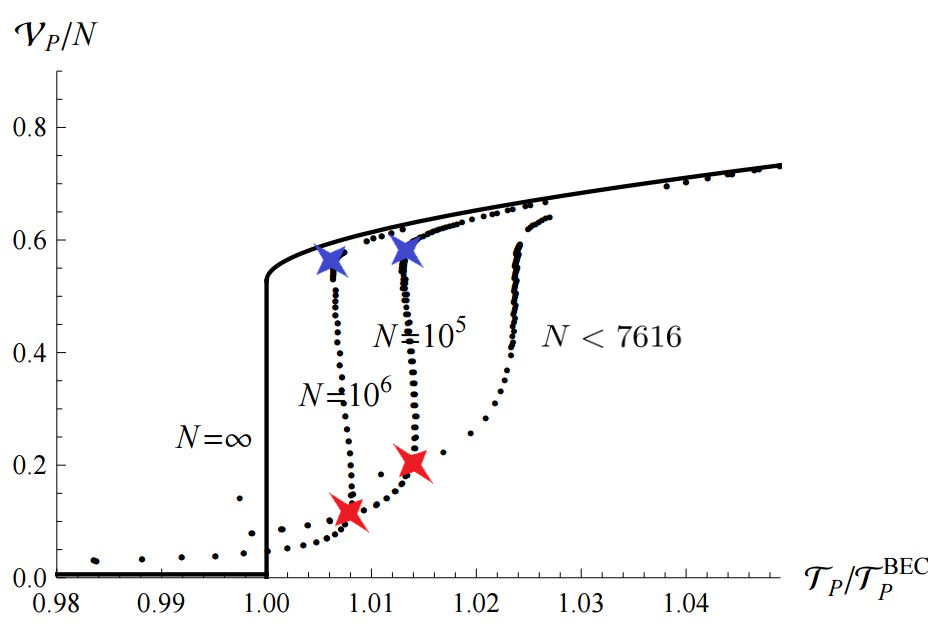

Bonus Question
More Is Different... But How Many Is Different?
Jeong-Hyuck Park
Critical Number 7616

★ Supercooling Point
★ Superheating Point
where (see [3] for details)
The isobar of the standard ideal Bose gas, confined in a cubic box, zigzags if the number of particles is no less than 7616 (canonical ensemble, exact result) [1]. This critical number can be viewed as the quantum characteristic of cube or Jacobi theta function. Depending on the shape and dimension of the container, yet not size, the critical number varies but always exists [4, 5]. Analytic methods for large \(N\) reveal the finite effect of Avogadro number [3], and predict isobaric critical exponents even for interacting real molecules [2], which are in good agreement with experiments [6, 7].
Liquid-gas phase transitions may occur essentially due to the identical nature of particles. In the sense of Thomas Kuhn, these works might be viewed as “anomaly” within the current paradigm of taking the thermodynamic limit for realizing discrete phase transitions. A finite system cannot feature any discrete phase transition if the density is fixed, but it can do so well if the alternative ‘isobaric’ constraint is imposed: without changing the density it is hard to boil water but it becomes easy under constant pressure, such as \(100^{\circ}\)C at \(1\) atm.
References
- JHP and S. W. Kim, “Thermodynamic instability and first-order phase transition in an ideal Bose gas,” Phys. Rev. A 81 (2010) 063636 [arXiv:0809.4652 [cond-mat.stat-mech]].
- JHP and S. W. Kim, “Existence of a critical point in the phase diagram of the ideal relativistic neutral Bose gas,” New J. Phys. 13 (2011) 033003 [arXiv:1001.1823]. YouTube
- I. Jeon, S. W. Kim and JHP, “Isobar of an ideal Bose gas within the grand canonical ensemble,” Phys. Rev. A 84 (2011) 023636 [arXiv:1105.5697 [cond-mat.quant-gas]].
- JHP, “How many is different? Answer from ideal Bose gas,” J. Phys. Conf. Ser. 490 (2014) 012018 [arXiv:1310.5580 [cond-mat.stat-mech]].
- W. Cho, S. W. Kim and JHP, “Two-dimensional Bose-Einstein condensate under pressure,” New J. Phys. 17 (2015) no.1, 013038 [arXiv:1409.4277 [cond-mat.quant-gas]].
- W. Cho, D. H. Kim and JHP, “Isobaric Critical Exponents: Test of Analyticity against NIST Reference Data,” Front. Phys. 6 (2018) 112 [arXiv:1612.06532 [cond-mat.stat-mech]].
- J. Kim, D. H. Kim and JHP, “Janus van der Waals equations for real molecules with two-sided phase transitions,” Front. Phys. 10 (2022) 917453 [arXiv:2204.05557 [physics.chem-ph]].